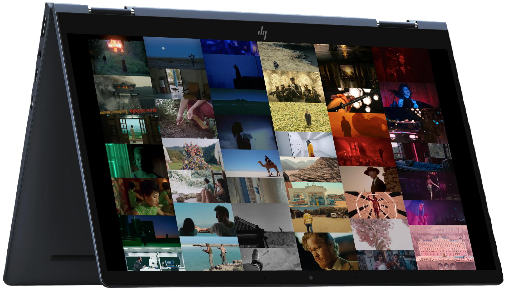
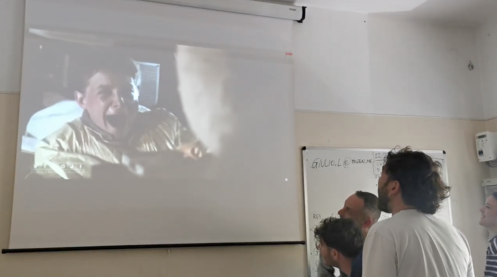
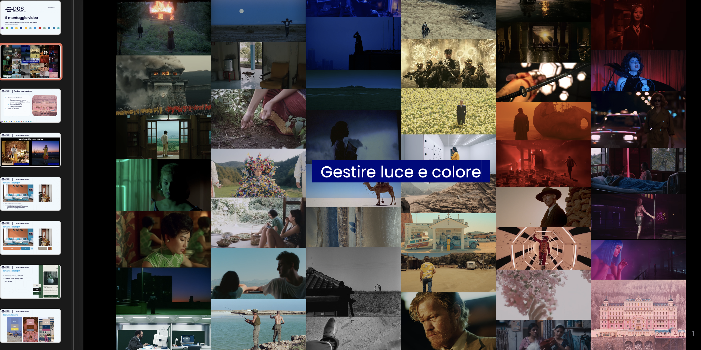
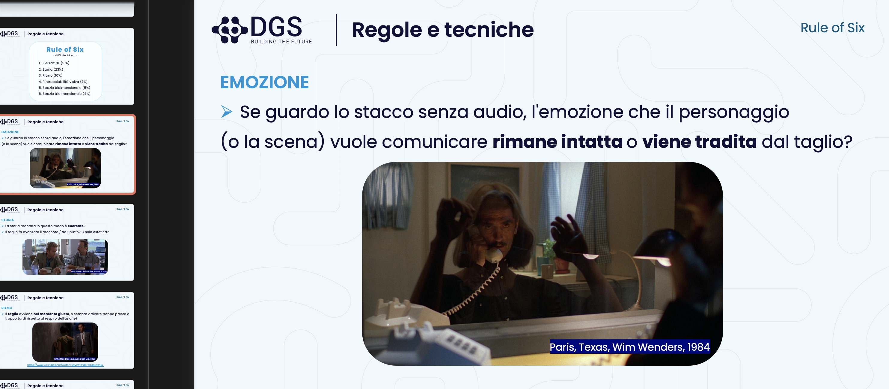
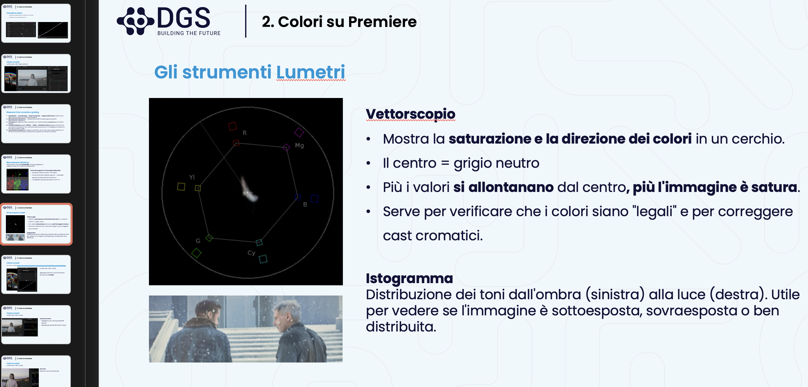
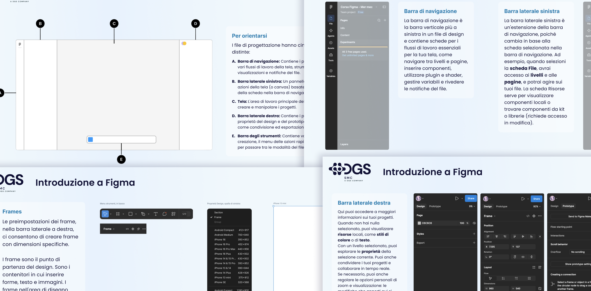

My Teaching Experience
Client: ITS Lazio Digital, Rome · SMC for a client team, Treviso
Team: Me as video editing teacher, co-leading the module with 2 professionals · me as sole Figma teacher
Scope: Teaching video editing to students; Figma design 101, from scratch to prototyping
Timeline: May 2026, 5 days (40 h) · September 2026, 2 days (16 h)
Outcome: 23 students enrolled, 5 lesson decks, 5 in-class exercises and a final interview-editing project graded on a 3-objective rubric · 7 team members trained, pre-course needs questionnaire and 14-slide handbook

Video editing instructor at ITS Lazio Digital
- Date: May 2026
- Location: ITS Lazio Digital, Rome, Italy
- Format: 5-day Intensive Workshop (8 hours/day | 40 total hours)
- Audience: 23 students ranging from young adults to mature professionals
I had the amazing opportunity to take part in the Video direction and editing course - leading the editing module with other two professionals - for the Digital Media Specialist course at ITS Lazio Digital in Rome. ITS (Istituto Tecnico Superiore) institutes are a distinctive part of the Italian education system: alongside university lecturers, they also bring in working professionals from the relevant field to teach, which is exactly how this opportunity came my way. Across this intensive 40-hour program, I balanced core theoretical foundations with hands-on practical exercises for a group of 23 students, from 18 to 45 years old.
My methodology was directly inspired by a very useful and transformative Sound Design course I attended at Aalto University in 2022. I adopted the Finnish approach to education: straight to the point theoretical concepts, immediate practical application, and a strong focus on student-driven, peer-to-peer learning.
Each day began with interactive media breakdowns—analyzing scenes from films, video games, and other audiovisual media, followed by open discussions to train the students' critical eye (and ear!). From there, we moved into hands-on activities with Adobe Premiere Pro. I spent most of the time walking between desks, providing one-on-one guidance, and answering questions or discussing ideas together. I found this environment deeply stimulating, and I tried to transform my enthusiasm into engagement among my students. I believe we successfully built a sense of community, since everyone had to collaborate in groups for the final activity, and this allowed me to learn just as much from their unique perspectives as they did from mine.
📄 Open the original Final skills assessment sheet (PDF, 954 KB)
Key highlights and curriculum covered
- Hands-on Practice in Premiere Pro: guided students through software installation, workspace customization, project organization, and industry-standard editing workflows.
- Audio & Color Mastering: taught practical post-production skills, including noise reduction, audio mixing, dialogue levelling, and color correction + grading.
- Inclusive Pedagogy: successfully tailored my communication and pacing to support a wide range of age groups and initial technical skill levels.

Becoming a Foley artist - group exercise
The image above shows how we set up the classroom for the Foley recording session. The exercise involved creating sound effects, and some screams too — which is why we almost got into trouble — for a short scene taken from Back to the Future: the scarecrow-on-the-windshield moment.
It was one of the group activities in which I noticed the most interest, enthusiasm and collaboration, precisely because I had asked for extreme attention to every single noise that emerged in the scene, and for everyone within the group to take on their own specific role. They did a great job, and I really hope I have instilled in them a new interest towards the noises and sounds that surround us, even in everyday life.
I developed a profound sensitivity to the art of Foley (in Italian rumorista) and the anatomy of ambient noise. It opened my mind to a fundamental truth: what an average person perceives as “silence” is actually a rich, complex tapestry of different pitches, amplitudes, beautiful patterns, timbres, and natural harmonies.
Here below some other screenshots taken from the presentation slides I used during my lessons: the cover of "Gestire luce e colore" lesson, resuming some of my favourite coloured scenes in cinema (and videogames); one out of 6 Rules of Editing - the Emotion; extract of my lesson on The magic of sounds taking Silent Hill 2 soundscapes as an example; practical tutorial on Adobe Premiere color lumetri tools.


![The magic of sounds: a screenshot of my lesson on soundscapes in which I took Silent Hill 2 videogame as an example. Also in the screenshot: il paesaggio sonoro - rumori d'ambiente come protagonisti (es. Antonioni) Il sottofondo per generare tensione - es. Lynch rabbit; La musica come identità, il Leitmotiv, es. Signore degli anelli; La soggettiva sonora: https://www.youtube.com/watch?v=XijMMhs55oc&t=280s; Creare dissonanza (Goodfellas Layla scene): https://www.youtube.com/watch?v=1Z6MJljCJ20&t=6ls .](assets/imgs/courses/ITS-3.png)

✩₊˚.⋆☾⋆⁺₊✧✩₊˚.⋆☾⋆⁺₊✧✩₊˚.⋆☾⋆⁺₊✧✩₊˚.⋆☾⋆⁺₊✧✩₊˚.⋆☾⋆⁺₊✧✩₊˚.⋆☾⋆⁺₊✧✩₊˚.⋆☾⋆⁺₊✧
Figma Design 101
- Date: September 2026
- Location: Treviso, Italy
- Format: 2 days, 8 hours/day | 16 total hours
- Audience: 7 cross-functional team members (Developers, System & Product Managers) with different experience levels
I recently designed and led a two-day, hands-on Figma training for an engineering team at an enterprise software company. To respect non-disclosure agreements, I am keeping the company name and specific product details confidential, but I am glad to share the structure and outcomes of the experience.
The group of seven had genuinely mixed backgrounds: software developers, a product line manager, and system product managers, each arriving with a different relationship to design tools and different priorities for the product. Fitting a full "Figma 101" — from the fundamentals all the way to interactive prototyping — into just two days meant building a curriculum flexible enough to meet every skill level without losing pace.

Across the two days, we covered:
- Navigating the Figma interface and file structure
- Building responsive layouts with Auto Layout
- Creating component systems with states and variants
- Swapping components for modular, data-driven interfaces
- Prototyping interactive flows, alerts, and modals
- Scaling design consistently with styles and variables
- Checking accessibility and contrast on data-dense screens
- Handing off designs to developers through Dev Mode
What stood out most was how quickly this engineering-heavy group engaged with material that could easily have felt abstract, and how naturally the concepts seemed to click. For me, feeling their curiosity build session after session was genuinely rewarding and I'd like to think that clear, well-paced explanations had something to do with it! Two days in, the shift in their confidence with the tool was obvious.

This was my third experience as a Figma teacher (you can find other stuff at this link ), and I am proud to say I felt far more confident and at ease sharing my passion for a tool I rely on every single day!